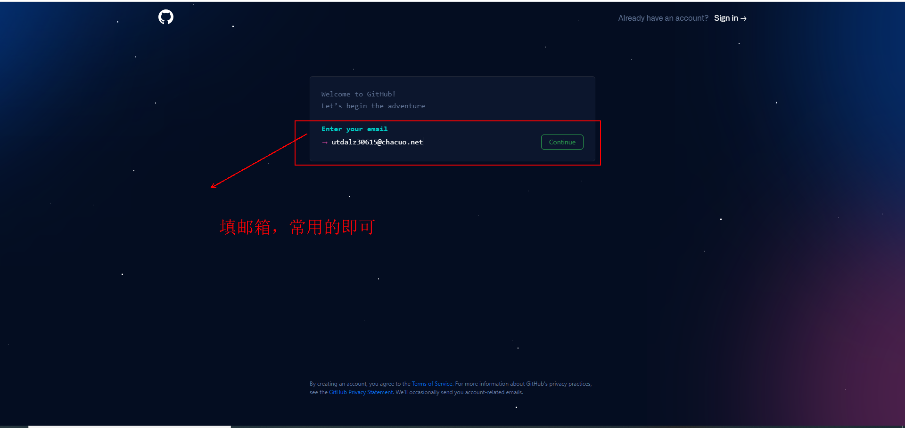
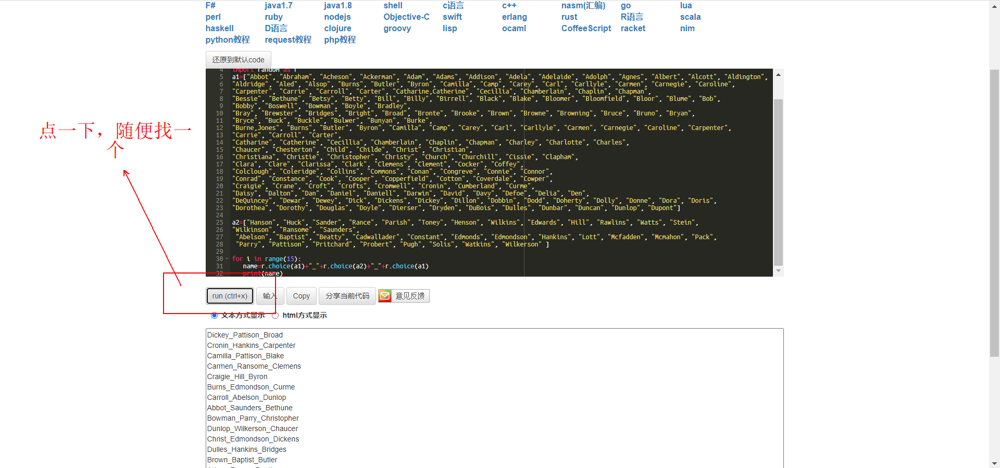
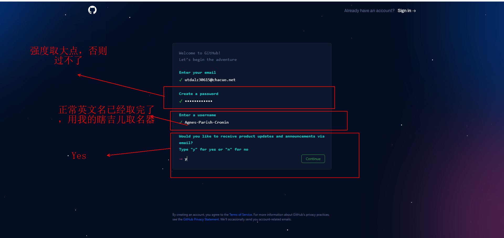
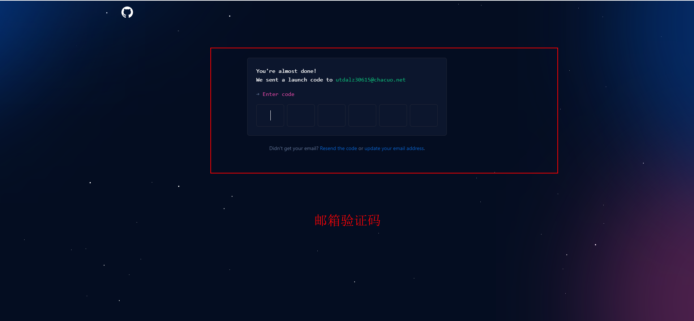
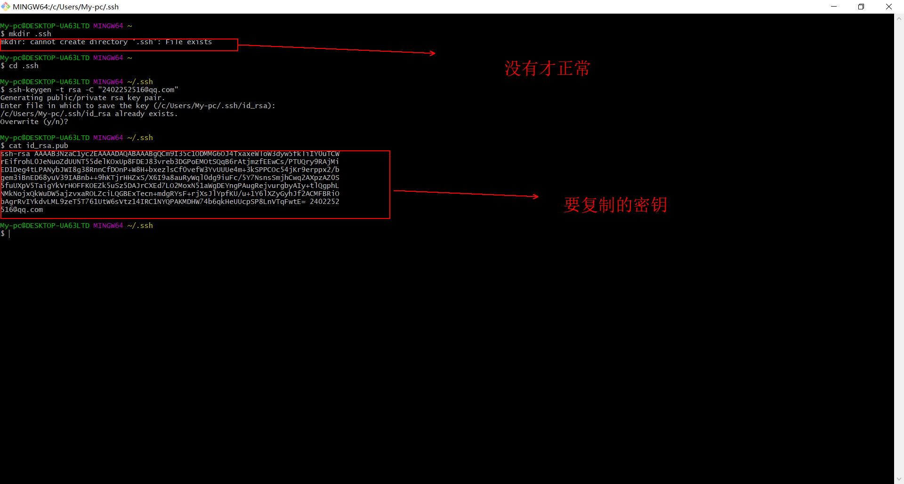
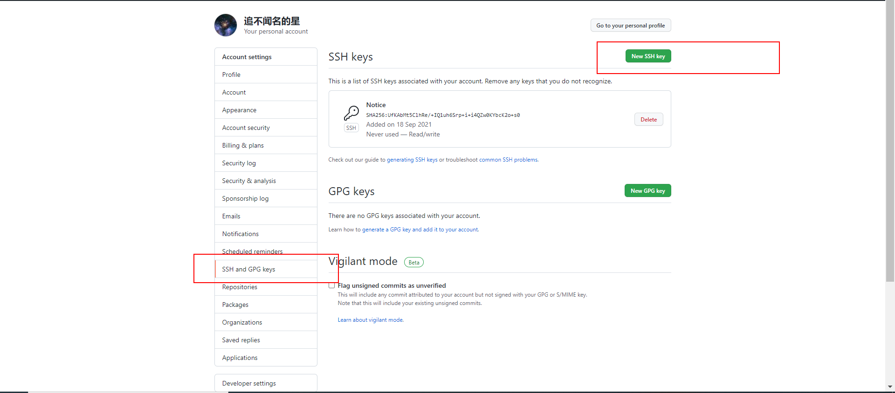

{{ value.name }}
GitHub 是一个利用 Git 进行版本控制、专门用于存放软件代码与内容的共享虚拟主机服务。
早期，付费用户可以创建私人仓库，免费用户可以创建公共仓库，现在付费用户和免费用户都可以创建私有仓库。
下面简要介绍Github网站各个按钮的作用
首先输入你的邮箱   点击跳转瞎吉儿取名器 取个高强度密码，以及用上面的工具创建用户名  填写验证码 
这一步并不是一定要执行的。如果Git与Github没有关联，每次提交代码时也只需要输入密码和账号，以及提交地址必须为https.
首先创建.ssh目录，使用以下命令
mkdir .ssh
接着跳转到.ssh目录
cd .ssh
然后使用命令生成公钥
//""内为你的邮箱地址，一定要和前面账户级配置一样
ssh-keygen -t rsa -C "email"
如果正常运行的话，会出现
Enter passphrase (empty for no passphrase):或者Overwrite (y/n)?
回车，出现Enter same passphrase again: 再次回车
使用以下命令，执行生成的id_rsa.pub文件
cat id_rsa.pub

点开头像，点击setting,进入下面的界面后点击SSH and GPG keys，点击New SSH Keys，随便搞个名字，然后把公钥粘贴进去

分支是在同一时间在不同版本的存储库的工作方式。默认情况下，你的文档库中有一个名为master的分支，其被认为是默认的分支。
github也能创建和管理分支，具体参考下面的链接
github创建分支
下面主要讲怎么使用Git创建和管理分支。
//commit节点参照Git基础篇
git branch "分支名称" commit节点名称
//查看所有分支
git branch
//git branch如果后面没有跟commit节点 默认最新节点
创建分支后可以使用命令切换分支
//分支名称不需要引号
git checkout 分支名称
//切换分支前需要commmit当前分支，如果没有则会停止切换，并弹出警告
//如果不想保存修改，又想切换分支，使用命令
git checkout -f 分支名称
如果要删除分支，请先将分支切换后再执行下面的删除分支指令
git branch -d 要删除的分支名称
如果要修改分支名称，请先将分支切换到要修改的分支后再执行下面的修改指令
git branch -m 新名称
分支修改结束后，需要将其合并到主分支(分支是版本，修改完毕后就需要和主版本合并起来)
//切换到主分支
git checkout master
//合并分支,将需要合并的分支和主分支合并在一起
git merge 分支名称
如果项目代码是第一次获取，使用clone命令将仓库中的代码拉到本地文件夹
git clone https地址\ssh地址
//使用https地址的话，需要配置令牌，而且30天过期不是很方便
//如果使用ssh地址，只要按上面的配置后，命令就会正常执行了
//克隆会把全部文件克隆下来，如果只是想要部分文件，请使用浏览器插件
克隆完毕后，可以将远程仓库地址和本地地址关联起来，下次使用pull\fetch就能直接拉取
git remote add origin https地址\ssh地址
//例子
git remote add origin git@github.com:bykevin/Linux_base.git
下面是pull\fetch使用的一些例子
//pull
git pull origin 分支名
//分支名写main就行
//fetch
git fetch origin 分支名
/*fetch和pull相比，执行更保守。在执行时，他会检查远程
分支和本地分支是否存在冲突。这里由于只有一个分支，
没啥区别*/